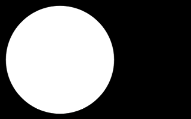
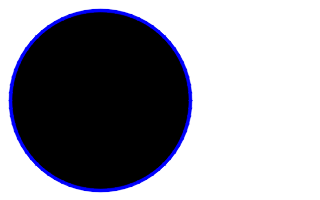
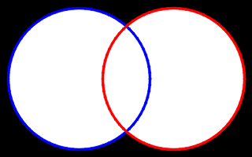
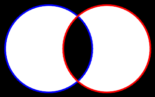

| Safe Haskell | None |
|---|---|
| Language | Haskell2010 |
OpenCV.Core.ArrayOps
Description
Operations on arrays
- matScalarAdd :: ToScalar scalar => Mat shape channels depth -> scalar -> Mat shape channels depth
- matScalarMult :: Mat shape channels depth -> Double -> Mat shape channels depth
- matAbs :: Mat shape channels depth -> Mat shape channels depth
- matAbsDiff :: Mat shape channels depth -> Mat shape channels depth -> Mat shape channels depth
- matAdd :: Mat shape channels depth -> Mat shape channels depth -> Mat shape channels depth
- matSubtract :: Mat shape channels depth -> Mat shape channels depth -> Mat shape channels depth
- matAddWeighted :: forall shape channels srcDepth dstDepth. ToDepthDS (Proxy dstDepth) => Mat shape channels srcDepth -> Double -> Mat shape channels srcDepth -> Double -> Double -> CvExcept (Mat shape channels dstDepth)
- matScaleAdd :: Mat shape channels depth -> Double -> Mat shape channels depth -> CvExcept (Mat shape channels depth)
- matMax :: Mat shape channels depth -> Mat shape channels depth -> CvExcept (Mat shape channels depth)
- bitwiseNot :: Mat shape channels depth -> CvExcept (Mat shape channels depth)
- bitwiseAnd :: Mat shape channels depth -> Mat shape channels depth -> CvExcept (Mat shape channels depth)
- bitwiseOr :: Mat shape channels depth -> Mat shape channels depth -> CvExcept (Mat shape channels depth)
- bitwiseXor :: Mat shape channels depth -> Mat shape channels depth -> CvExcept (Mat shape channels depth)
- matMerge :: Vector (Mat shape (S 1) depth) -> Mat shape D depth
- matSplit :: Mat shape channels depth -> Vector (Mat shape (S 1) depth)
- minMaxLoc :: Mat (S `[height, width]`) channels depth -> CvExcept (Double, Double, Point2i, Point2i)
- data NormType
- data NormAbsRel
- norm :: NormType -> Maybe (Mat shape (S 1) (S Word8)) -> Mat shape channels depth -> CvExcept Double
- normDiff :: NormAbsRel -> NormType -> Maybe (Mat shape (S 1) (S Word8)) -> Mat shape channels depth -> Mat shape channels depth -> CvExcept Double
- normalize :: forall shape channels srcDepth dstDepth. ToDepthDS (Proxy dstDepth) => Double -> Double -> NormType -> Maybe (Mat shape (S 1) (S Word8)) -> Mat shape channels srcDepth -> CvExcept (Mat shape channels dstDepth)
- matSum :: Mat shape channels depth -> CvExcept Scalar
- matSumM :: PrimMonad m => Mut (Mat shape channels depth) (PrimState m) -> CvExceptT m Scalar
- meanStdDev :: (1 <= channels, channels <= 4) => Mat shape (S channels) depth -> Maybe (Mat shape (S 1) (S Word8)) -> CvExcept (Scalar, Scalar)
Per element operations
The following functions work on the individual elements of matrices.
Examples are based on the following two images:

Calculates an absolute value of each matrix element.
Calculates the per-element absolute difference between two arrays.
Example:
matAbsDiffImg :: Mat (ShapeT [341, 512]) ('S 3) ('S Word8)
matAbsDiffImg = matAbsDiff flower_512x341 sailboat_512x341

Calculates the per-element sum of two arrays.
Example:
matAddImg :: Mat (ShapeT [341, 512]) ('S 3) ('S Word8)
matAddImg = matAdd flower_512x341 sailboat_512x341

Calculates the per-element difference between two arrays
Example:
matSubtractImg :: Mat (ShapeT [341, 512]) ('S 3) ('S Word8)
matSubtractImg = matSubtract flower_512x341 sailboat_512x341
Arguments
| :: ToDepthDS (Proxy dstDepth) | |
| => Mat shape channels srcDepth | src1 |
| -> Double | alpha |
| -> Mat shape channels srcDepth | src2 |
| -> Double | beta |
| -> Double | gamma |
| -> CvExcept (Mat shape channels dstDepth) |
Calculates the weighted sum of two arrays
Example:
matAddWeightedImg :: Mat (ShapeT [341, 512]) ('S 3) ('S Word8)
matAddWeightedImg = exceptError $
matAddWeighted flower_512x341 0.5 sailboat_512x341 0.5 0.0

Arguments
| :: Mat shape channels depth | First input array. |
| -> Double | Scale factor for the first array. |
| -> Mat shape channels depth | Second input array. |
| -> CvExcept (Mat shape channels depth) |
Calculates the sum of a scaled array and another array.
The function scaleAdd is one of the classical primitive linear algebra operations, known as DAXPY or SAXPY in BLAS. It calculates the sum of a scaled array and another array.
Bitwise operations
The examples for the bitwise operations make use of the following images:
Example:
type VennShape = [200, 320]
vennCircleAImg :: Mat (ShapeT VennShape) ('S 1) ('S Word8)
vennCircleAImg = exceptError $
withMatM
(Proxy :: Proxy VennShape)
(Proxy :: Proxy 1)
(Proxy :: Proxy Word8)
black $ imgM -> lift $ vennCircleA imgM white (-1)
vennCircleBImg :: Mat (ShapeT VennShape) ('S 1) ('S Word8)
vennCircleBImg = exceptError $
withMatM
(Proxy :: Proxy VennShape)
(Proxy :: Proxy 1)
(Proxy :: Proxy Word8)
black $ imgM -> lift $ vennCircleB imgM white (-1)


Example:
bitwiseNotImg :: Mat (ShapeT VennShape) ('S 3) ('S Word8)
bitwiseNotImg = exceptError $ do
img <- bitwiseNot vennCircleAImg
imgBgr <- cvtColor gray bgr img
createMat $ do
imgM <- lift $ thaw imgBgr
lift $ vennCircleA imgM blue 2
pure imgM

Arguments
| :: Mat shape channels depth | |
| -> Mat shape channels depth | |
| -> CvExcept (Mat shape channels depth) |
Example:
bitwiseAndImg :: Mat (ShapeT VennShape) ('S 3) ('S Word8)
bitwiseAndImg = exceptError $ do
img <- bitwiseAnd vennCircleAImg vennCircleBImg
imgBgr <- cvtColor gray bgr img
createMat $ do
imgM <- lift $ thaw imgBgr
lift $ vennCircleA imgM blue 2
lift $ vennCircleB imgM red 2
pure imgM

Arguments
| :: Mat shape channels depth | |
| -> Mat shape channels depth | |
| -> CvExcept (Mat shape channels depth) |
Example:
bitwiseOrImg :: Mat (ShapeT VennShape) ('S 3) ('S Word8)
bitwiseOrImg = exceptError $ do
img <- bitwiseOr vennCircleAImg vennCircleBImg
imgBgr <- cvtColor gray bgr img
createMat $ do
imgM <- lift $ thaw imgBgr
lift $ vennCircleA imgM blue 2
lift $ vennCircleB imgM red 2
pure imgM

Arguments
| :: Mat shape channels depth | |
| -> Mat shape channels depth | |
| -> CvExcept (Mat shape channels depth) |
Example:
bitwiseXorImg :: Mat (ShapeT VennShape) ('S 3) ('S Word8)
bitwiseXorImg = exceptError $ do
img <- bitwiseXor vennCircleAImg vennCircleBImg
imgBgr <- cvtColor gray bgr img
createMat $ do
imgM <- lift $ thaw imgBgr
lift $ vennCircleA imgM blue 2
lift $ vennCircleB imgM red 2
pure imgM

Channel operations
Creates one multichannel array out of several single-channel ones.
Divides a multi-channel array into several single-channel arrays.
Example:
matSplitImg
:: forall (width :: Nat)
(width3 :: Nat)
(height :: Nat)
(channels :: Nat)
(depth :: *)
. ( Mat (ShapeT [height, width]) ('S channels) ('S depth) ~ Birds_512x341
, width3 ~ ((*) width 3)
)
=> Mat (ShapeT [height, width3]) ('S channels) ('S depth)
matSplitImg = exceptError $ do
zeroImg <- mkMat (Proxy :: Proxy [height, width])
(Proxy :: Proxy 1)
(Proxy :: Proxy depth)
black
let blueImg = matMerge $ V.fromList [channelImgs V.! 0, zeroImg, zeroImg]
greenImg = matMerge $ V.fromList [zeroImg, channelImgs V.! 1, zeroImg]
redImg = matMerge $ V.fromList [zeroImg, zeroImg, channelImgs V.! 2]
withMatM (Proxy :: Proxy [height, width3])
(Proxy :: Proxy channels)
(Proxy :: Proxy depth)
white $ imgM -> do
matCopyToM imgM (V2 (w*0) 0) (unsafeCoerceMat blueImg) Nothing
matCopyToM imgM (V2 (w*1) 0) (unsafeCoerceMat greenImg) Nothing
matCopyToM imgM (V2 (w*2) 0) (unsafeCoerceMat redImg) Nothing
where
channelImgs = matSplit birds_512x341
w :: Int32
w = fromInteger $ natVal (Proxy :: Proxy width)

Other
Finds the global minimum and maximum in an array
Normalization type
Constructors
| Norm_Inf | |
| Norm_L1 | |
| Norm_L2 | |
| Norm_L2SQR | |
| Norm_Hamming | |
| Norm_Hamming2 | |
| Norm_MinMax |
Arguments
| :: NormType | |
| -> Maybe (Mat shape (S 1) (S Word8)) | Optional operation mask; it must have the same size as the input
array, depth |
| -> Mat shape channels depth | Input array. |
| -> CvExcept Double | Calculated norm. |
Calculates an absolute array norm
Arguments
| :: NormAbsRel | Absolute or relative norm. |
| -> NormType | |
| -> Maybe (Mat shape (S 1) (S Word8)) | Optional operation mask; it must have the same size as the input
array, depth |
| -> Mat shape channels depth | First input array. |
| -> Mat shape channels depth | Second input array of the same size and type as the first. |
| -> CvExcept Double | Calculated norm. |
Calculates an absolute difference norm, or a relative difference norm
Arguments
| :: ToDepthDS (Proxy dstDepth) | |
| => Double | Norm value to normalize to or the lower range boundary in case of the range normalization. |
| -> Double | Upper range boundary in case of the range normalization; it is not used for the norm normalization. |
| -> NormType | |
| -> Maybe (Mat shape (S 1) (S Word8)) | Optional operation mask. |
| -> Mat shape channels srcDepth | Input array. |
| -> CvExcept (Mat shape channels dstDepth) |
Normalizes the norm or value range of an array
Arguments
| :: Mat shape channels depth | Input array that must have from 1 to 4 channels. |
| -> CvExcept Scalar |
Calculates the sum of array elements
Example:
matSumImg :: Mat (ShapeT [201, 201]) ('S 3) ('S Word8)
matSumImg = exceptError $
withMatM
(Proxy :: Proxy [201, 201])
(Proxy :: Proxy 3)
(Proxy :: Proxy Word8)
black $ imgM -> do
-- Draw a filled circle. Each pixel has a value of (255,255,255)
lift $ circle imgM (pure radius :: V2 Int32) radius white (-1) LineType_8 0
-- Calculate the sum of all pixels.
scalar <- matSumM imgM
let V4 area _y _z _w = fromScalar scalar :: V4 Double
-- Circle area = pi * radius * radius
let approxPi = area / 255 / (radius * radius)
lift $ putText imgM
(T.pack $ show approxPi)
(V2 40 110 :: V2 Int32)
(Font FontHersheyDuplex NotSlanted 1)
blue
1
LineType_AA
False
where
radius :: forall a. Num a => a
radius = 100